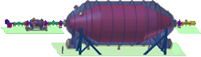
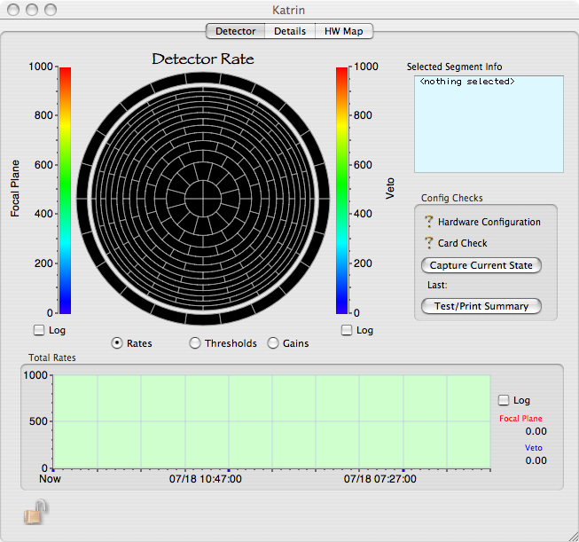
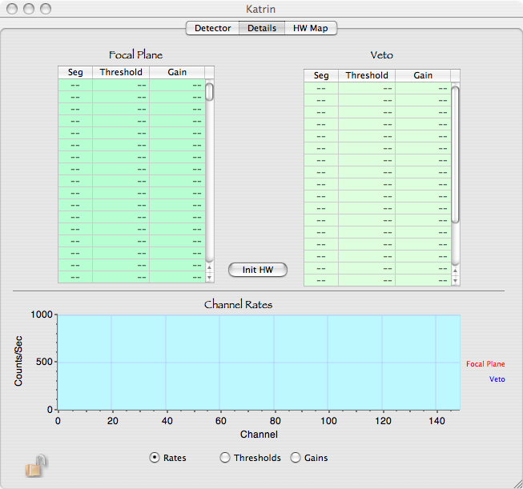
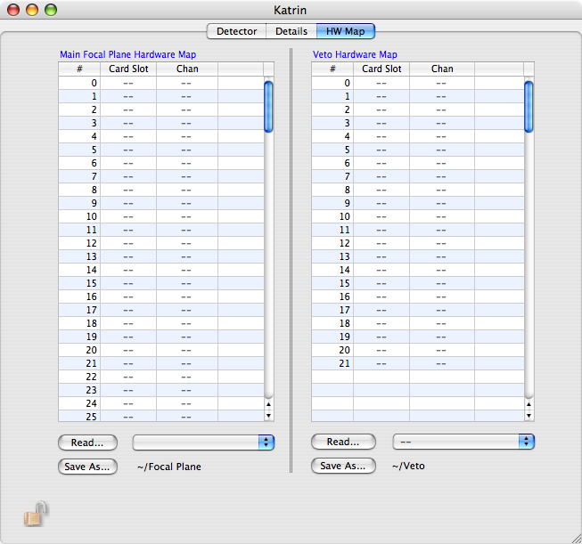
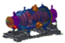
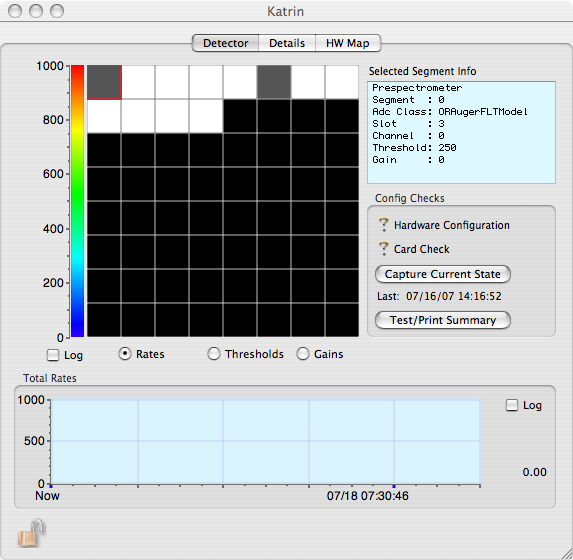
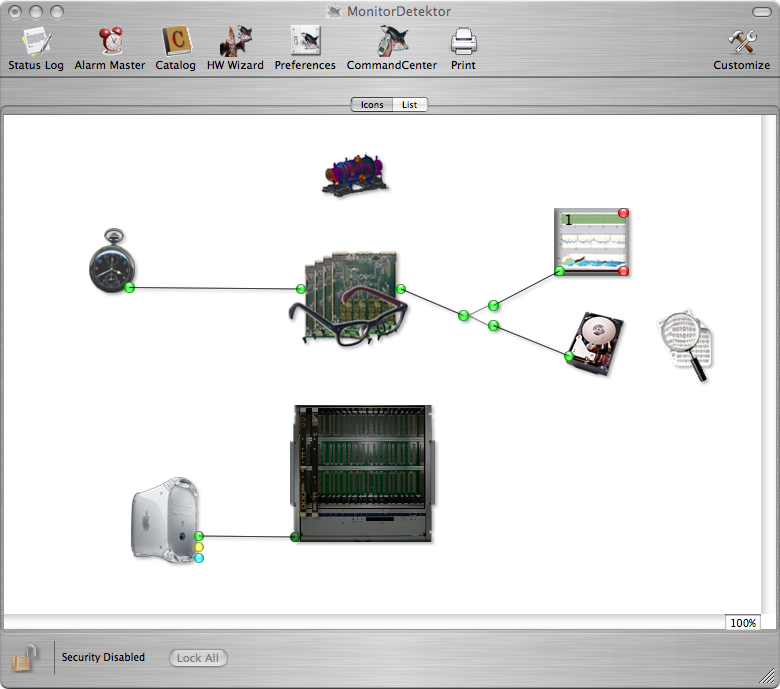

The KATRIN experiment is designed to measure the mass of the electron neutrino directly with a sensitivity of 0.2 eV. It is a next generation tritium beta-decay experiment scaling up the size and precision of previous experiments by an order of magnitude as well as the intensity of the tritium beta source.
The configuration icon for the KATRIN Experiment is: 
This window will contain information specific to the KATRIN Experiment.



The prespectrometer is used to gather experiences with the technologies required to build up the final KATRIN Experiment. With respect to the different detector setup an own experiment control dialog has been created.
The configuration icon for the KATRIN Prespectrometer Test-facility is: 
This window will contain information specific to the KATRIN Experiment.

In order to use ORCA for the KATRIN experiment or one of the test facilities an ORCA project has to be created. The project must contain the DAQ hardware components like host computer and IPE-DAQ electronics, the generic readout components and the experiment control (see above). The configuration of the project might look like the following one:
